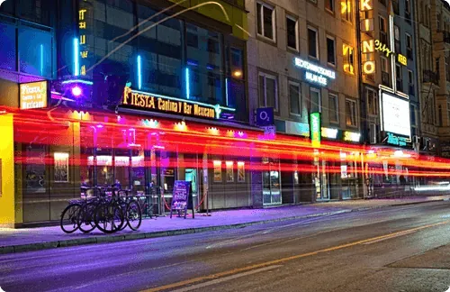

Leistung
Imagefilm & Videoproduktion in München
Wir übersetzen die Identität Ihrer Marke in bewegte Bilder. Seit über 14 Jahren drehen wir Filme – heute vom ersten Konzept bis zum fertigen Clip in allen Formaten, die Sie brauchen.
Ein Film, der zu Ihrem Unternehmen passt
Ein guter Imagefilm erklärt nicht nur, was Sie tun, sondern zeigt, wie es sich anfühlt, mit Ihnen zu arbeiten. Deshalb beginnen wir nicht mit der Kamera, sondern mit Ihren Zielen, Ihrer Zielgruppe und der Geschichte, die Sie erzählen möchten.
Daraus entsteht ein Konzept, das wir gemeinsam schärfen, bevor wir drehen. Sie arbeiten dabei direkt mit uns zusammen, nicht mit einer Agentur – kurze Wege, klare Absprachen und ein Ergebnis, das zu Ihrer Marke passt.
Formate
Imagefilm & Firmenporträt
Wer Sie sind, was Sie antreibt und was Kunden von Ihnen erwarten dürfen – in wenigen Minuten erzählt.
Interviews & Mitarbeiterporträts
Führungsinterviews und Stimmen aus dem Team, ruhig ausgeleuchtet und sauber im Ton.
Produktvideos & Launches
Ihr Produkt im besten Licht – für Website, Präsentation, Messe und Social Media.
Eventfilme & Social-Clips
Recaps von Veranstaltungen und kurze Clips im Hochformat für Instagram, TikTok und LinkedIn.
Bildsprache
Kamerafahrt, Licht und Bewegung: ein Ausschnitt aus unserer Arbeit. Mehr Filme und Projekte zeigt unser Portfolio. Zum Vergrößern einfach auf ein Bild klicken.





So läuft es ab
Konzept & Strategie
Wir verstehen Ihre Vision, Ziele und Zielgruppe und entwickeln daraus ein Konzept für Ihren Film.
Vorproduktion
Storyboard, Location-Suche, Shotliste, Terminplanung und Crew – für einen reibungslosen Drehtag.
Produktion
Der Dreh mit professioneller Kamera- und Lichttechnik und einem Blick für die richtigen Momente.
Postproduktion
Schnitt, Color Grading, Sound Design und Motion Graphics – geliefert in allen Formaten, die Sie benötigen.
Häufige Fragen
Wie lange dauert die Produktion eines Imagefilms?
Das hängt vom Umfang ab. Ein kurzer Social-Clip braucht weniger Zeit als ein Imagefilm mit mehreren Drehorten. Den Zeitplan legen wir im Vorgespräch gemeinsam fest.
In welchen Formaten bekomme ich den Film?
In allen, die Sie brauchen – zum Beispiel im Querformat für Website und Präsentation und im Hochformat für Social Media.
Kann ich Änderungswünsche äußern?
Ja, natürlich. Wir arbeiten eng mit Ihnen zusammen und berücksichtigen Ihr Feedback. Die Anzahl der Korrekturschleifen klären wir vorab.
Bekomme ich auch Fotos und eine Website?
Ja. Neben Filmen produzieren wir Fotos und gestalten Websites – alles aus einer Hand und im selben Stil.
Was kostet ein Imagefilm?
Jedes Projekt ist individuell. Sie erhalten ein Angebot auf Basis Ihrer Anforderungen, des Umfangs und der Komplexität.
Erzählen Sie uns von Ihrem Projekt
Schreiben Sie uns kurz, worum es geht – wir melden uns schnellstmöglich mit Ideen und einem unverbindlichen Angebot. Oder rufen Sie direkt an: +49 151 55828308
Weitere Leistungen: